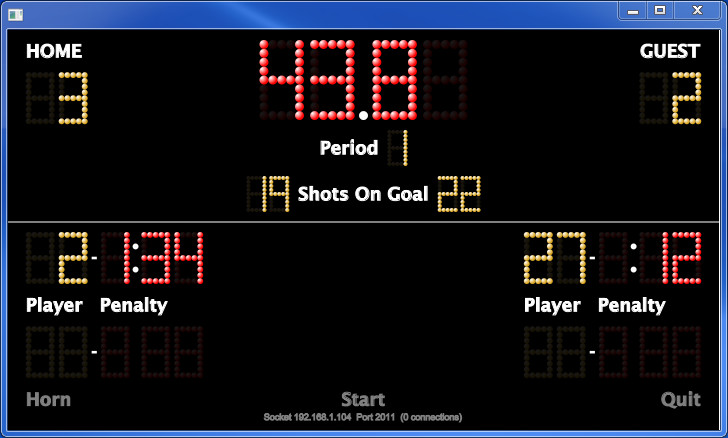

Java.net and Kenai.com Forges Closing, Moving to GitHub
By Jim Connors 2 November 2016
Aside from all that eloquent prose (wink, wink), my entries have,
through the years, referenced a fair amount of source code and
provided downloads to some of those examples. Having wanted to
move these to a modern source code repository for a while now; an
approaching event has forced the issue: namely that Oracle has
announced the closing
of the Java.net and Kenai.com forges on April 28, 2017.
In accordance, I've revisited a few blog entries and rehosted
referenced source code projects on GitHub under the https://github.com/jtconnors
URL. Here is some more information:
JavaFX Scoreboard

Entry:
A Raspberry Pi / JavaFX Electronic Scoreboard Application
Entry: Source
Code for JavaFX Scoreboard Now Available
(You can click on the Scoreboard image to start the application).
To date, nearly 100 readers have asked for access to this source
code. In the past, requestors had to provide a Java.net
username in order to subscribe to the Java.net project, entitling
them download rights. You can now access the source code
(without any inconvenience) for version 1.1 of the JavaFX
Scoreboard on GitHub at the following location:
https://github.com/jtconnors/Scoreboard-v1.1
An overview of the application can be found inside the GitHub
repository here.
Various Musings on Java and Sockets
Entry:
Update to JavaFX, Sockets and Threading: Lessons Learned
Entry: JavaFX,
Sockets and Threading: Lessons Learned
Entry: Adding a Timestamp
to a Signed Java RIA
In addition to the two original projects (you can click on the
images above to start the SocketServerFX and SocketClientFX
applications respectively), two more have been added to
GitHub to round out this discussion. The four NetBeans
projects are listed as follows:
- SocketServerFX (Image above on the left): a
simple JavaFX 2.x based UI application representing the server
end of a socket connection. Used in conjunction with the SocketClientFX
application, these two show how connections are established and
data is passed between sockets connections.
Source code can be accessed at https://github.com/jtconnors/SocketServerFX
- SocketClientFX (Image above on the right): a
simple JavaFX 2.x based UI application representing the client
end of a socket connection. Used in conjunction with the SocketServerFX
application, it shows how connections are established and data
is passed between sockets connections.
Source code can be accessed at https://github.com/jtconnors/SocketClientFX
- MultiSocketServerFX (new): JavaFX UI program, serving up
multiple client socket connections. Can be
used in conjunction with one or more SocketClientFX
clients.
Source code can be accessed at https://github.com/jtconnors/MultiSocketServerFX
- com.jtconnors.socket (new): Java socket
utility classes, utilized by the client and server programs,
packaged up for re-use
Source code can be accessed at https://github.com/jtconnors/com.jtconnors.socket